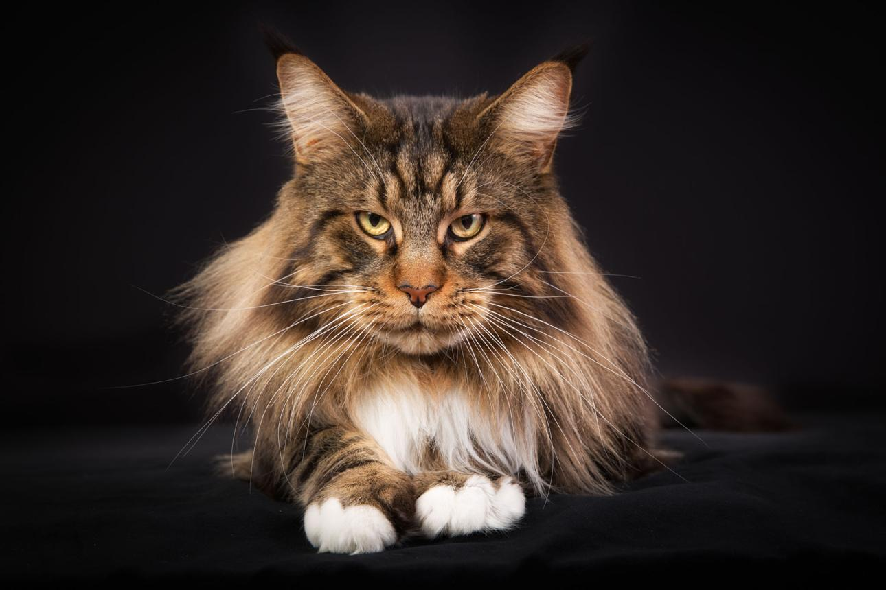
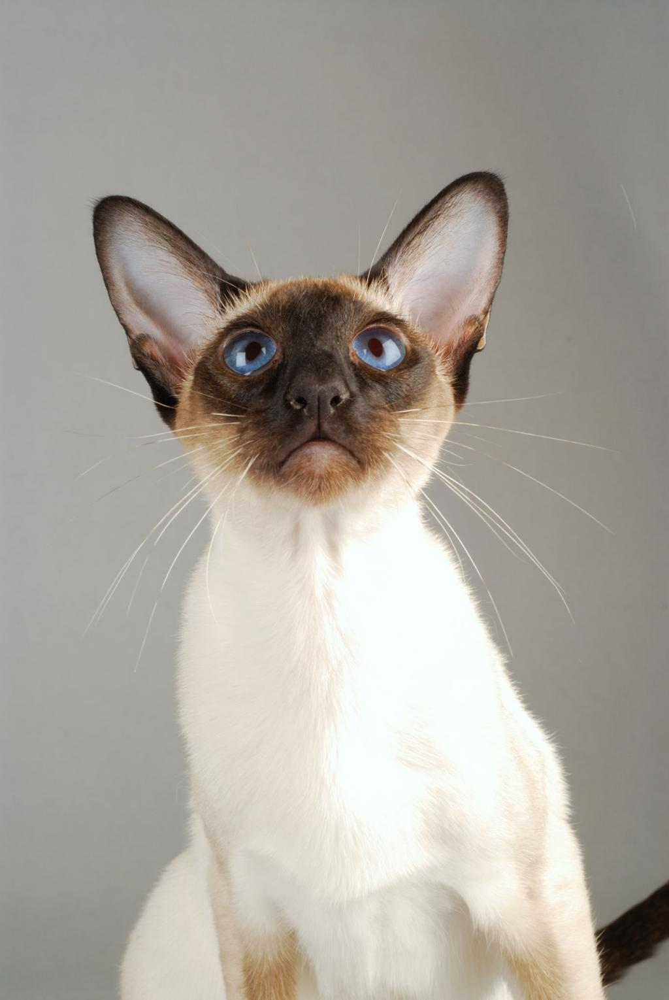
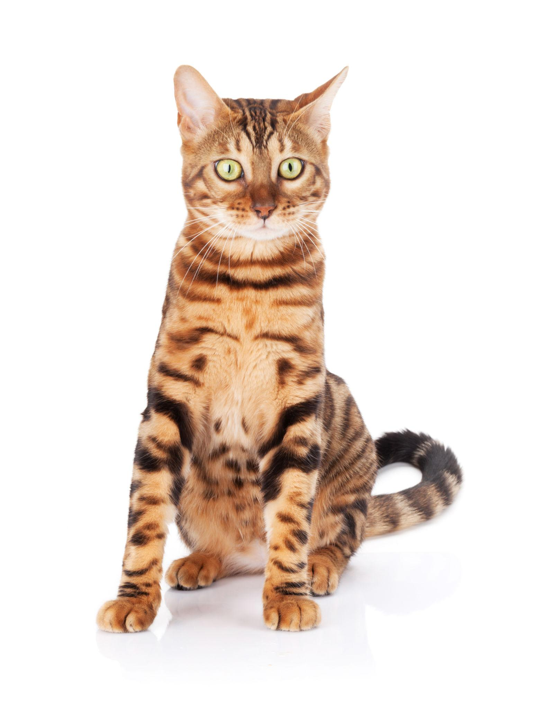
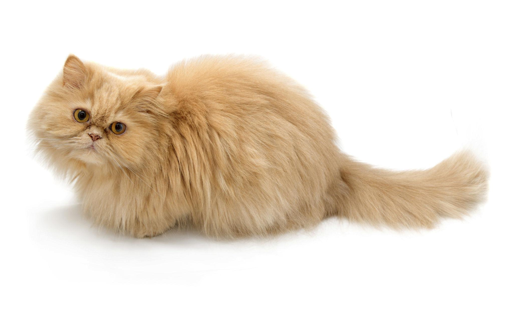
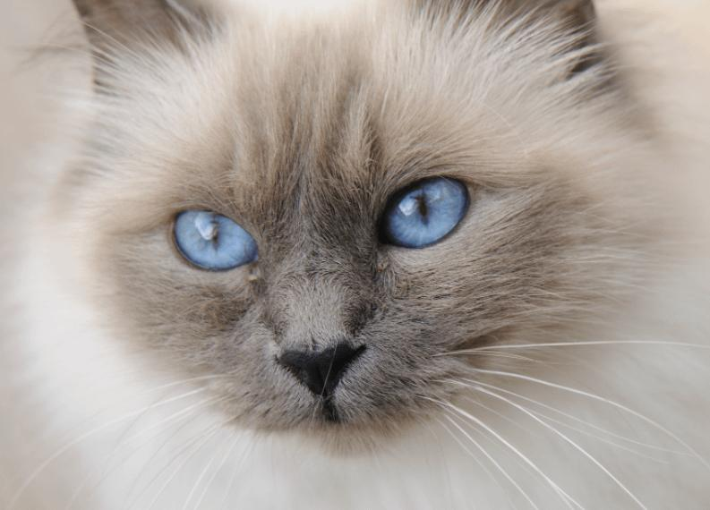
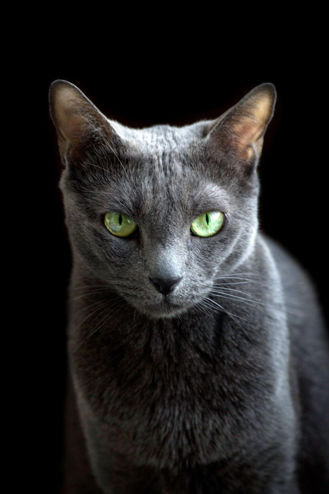
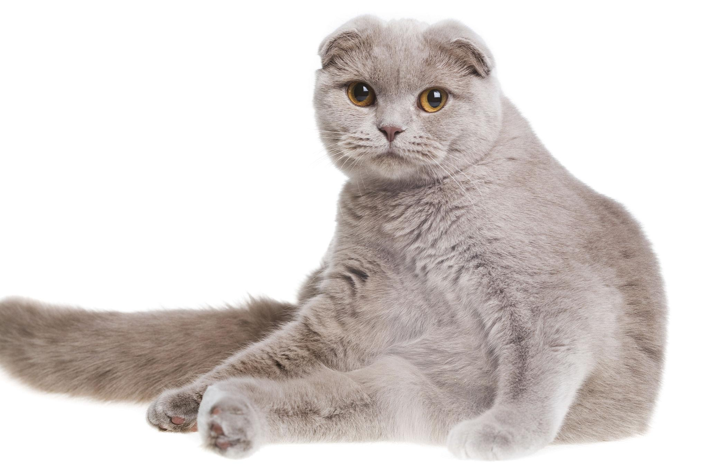
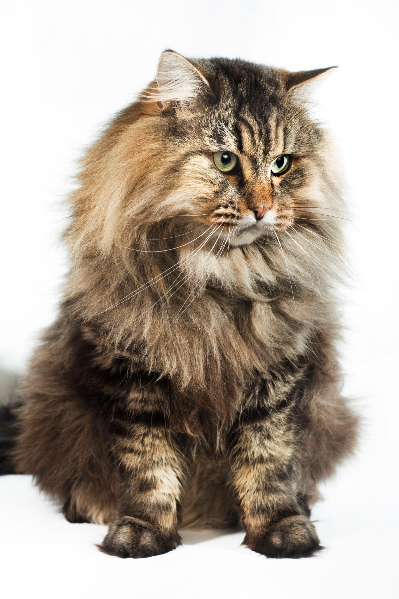
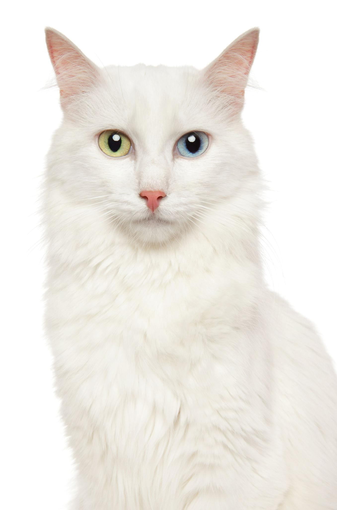
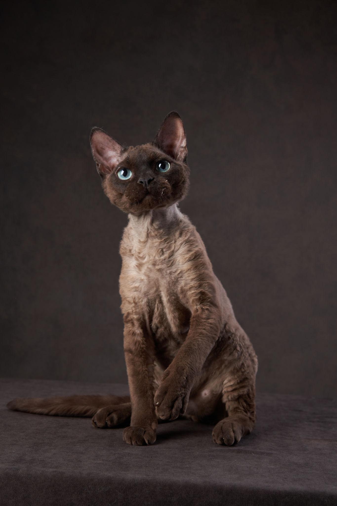

Her samler vi enkel og nyttig rasekunnskap om katter. Starten er 10 populære katteraser – senere kan vi bygge videre med flere raser og mer fakta.
⬅️ Tilbake til KunnskapssenterTest hvor mange katteraser du klarer å kjenne igjen før tiden går ut. Du får et 4×4 brett med katteraser, hint på siden og 3 minutter på klokken. Hver runde gir nye raser og nye utfordringer.
🧠 Start Hva husker du?Søk etter rase, opprinnelse eller egenskap.

En stor, sosial og rolig katt som ofte kalles en mild kjempe. Trives godt med mennesker og familieliv.

En elegant, sosial og svært pratsom katterase som knytter seg sterkt til menneskene sine.

En rolig og kjærlig katt med lang pels. Krever jevnlig pelsstell og passer godt i rolige hjem.

En energisk og leken katt med vakkert mønster. Trenger aktivisering, lek og et stimulerende miljø.

En mild, sosial og vakker katt med halvlang pels. Ofte rolig og trivelig i familier.

En elegant og rolig katt med blågrå pels. Kan være litt forsiktig, men blir ofte svært lojal mot sine mennesker.

En rolig og sosial katt kjent for sitt runde uttrykk. Trives ofte godt i rolige hjem.

En robust og sosial katt med tykk pels. Ofte leken, trygg og glad i kontakt med familien.

En livlig og elegant katt med lang historie. Ofte sosial, nysgjerrig og aktiv.

En morsom, sosial og aktiv katt med særegent utseende og bølgete pels. Liker ofte å være midt i familien.
Katteraser 2.0 er nå koblet sammen med utstyr, helse og kunnskapssenteret slik at du enkelt finner mer informasjon om hver rase.